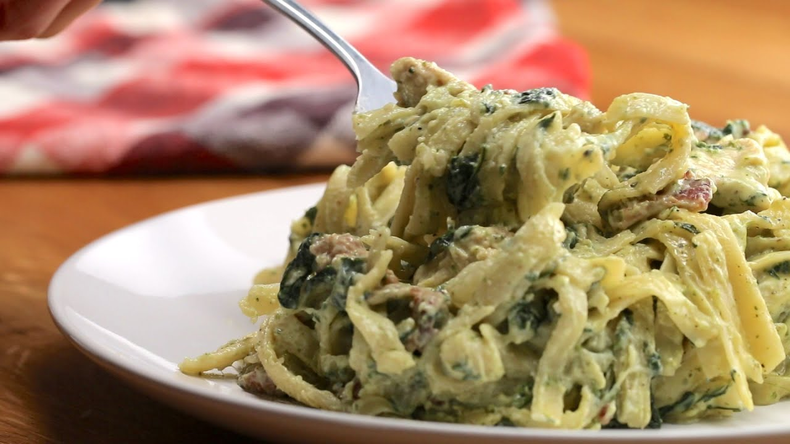

Receta de sabrosos Fideos con Pollo y Pesto

Descripcion
La pasta (talalrines) con pollo y pesto es exquisito, pero especialmente si se usa el pesto que hace mi papa. No se cual es la receta de este pesto asi que cagaron. Solo enseñare a cocinar los tallarines y el pollo.
Ingredientes
- Pesto de mi papa
- Pechuga de pollo
- tallarines
- sal
- pimienta
- adobo
- limon
- crema de leche
Pasos
Cocinar el pollo
- Corta el pollo descongelado en pedazos
- Cocina el pollo en una sarten
- Espera a que se dore por un lado y se desprenda solo
- Dar vuelta el pollo y echarle abundante sal, pimienta y adobo (y un poco de aceite)
- Una vez que este dorado por ambos lados echarle media taza de crema de leche y 3 cucharadas soperas de pesto
Cocinar los fideos
- Sacar una cantidad deseada de tallarines
- Echarlas a una olla con agua hirviendo, sal y un poco de aceite
- Cocinar por aproximadamente 10 minutos, checkear si estan blandos y comestibles
- Vaciar el agua de los fideos
Presentacion
- Echar los fideos a la sarten con pollo y pesto y revolver hasta que queden impregnados
- Servir y disfrutar lo mejor que probaras en tu vida
Volver al Inicio